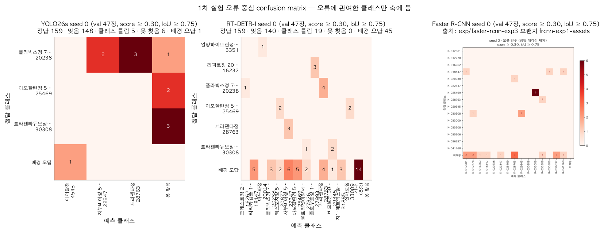

1 / 0
부록
부록: 1차 오류는 희소 약과 닮은 짝에 몰립니다

| 모델 (seed 0 / 1 / 2) | 맞음 | 클래스 틀림 | 못 찾음 | 배경 오답 | IoU<0.95 |
|---|
| YOLO26s | 148 / 143 / 144 | 5 / 12 / 5 | 6 / 4 / 10 | 1 / 6 / 5 | 11 / 8 / 16 |
| RT-DETR-l | 140 / 142 / 136 | 19 / 17 / 23 | 0 / 0 / 0 | 45 / 38 / 62 | 9 / 10 / 5 |
| Faster R-CNN | 145 / 142 / 141 | 14 / 17 / 18 | 0 / 0 / 0 | 14 / — / — | 30 / 30 / 32 |
▦
← →/Space 이동 · N 노트 · Esc 목차